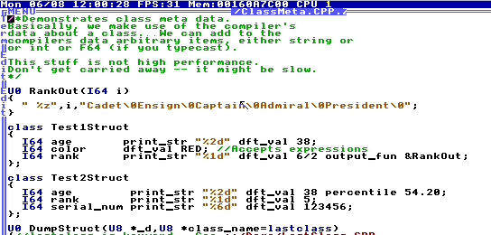
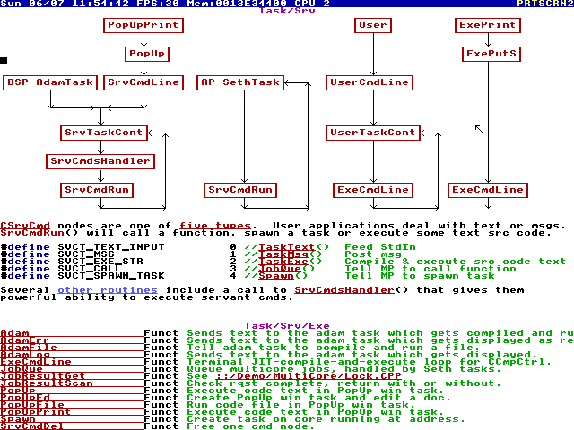

HolyC ✝
TempleOS has its own programming language, HolyC. The whole operating system is written in it, except for x64 assembly in the lower-level parts. Perhaps unexpectedly, the same language is also used for the shell. That's right, you execute shell commands using a C-like language, and they go directly into the compiler.
Every piece of code in TempleOS (except the initial kernel/compiler) is JIT compiled on demand.

DolDoc
The most notable feature of TempleOS is its ubiquitous hypertext system, DolDoc. This is the foundation for the both the shell and the text editor.
DolDoc isn't just for text. You can store images (and even 3D meshes) directly into documents. You can put macros in there: hyperlink commands that run when you click on them.
